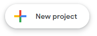

The method that this translator uses is the same as the translator being described in this document. If you know how to set that translator up, you will be able to set this one up very quickly.
The following steps are required to be able to use this translator. The method shown here requires a google account, but with some understanding of how it works, a custom system could work as well.
The first step is to create the Google app responsible for converting the speech into other languages.
Head to script.google.com to access your scripts. This will require that you have a Google account to access.
Create a new project by clicking on the New Project button.
You will now be greeted by a screen that should look simular to this:
Enter the following code into the blank editor that has now appeared.
function doGet(e) {
const p = e.parameter;
const translatedText = LanguageApp.translate(p.text, p.source, p.target);
return ContentService.createTextOutput(translatedText);
}
The defined function doGet is special as when the app is turned into a webapp, the doGet function is called for the get request.
e.parameter is a mapping of all the query parameters in the URL.
LanguageApp is the way to translate text using Google translate. The translate function takes in 3 arguments, the text to translate and the laguages to translate from and to, and returns the translated text.
ContentService.createTextOutput converts the translated text into a valid response that can be sent back to the client asking for the translation.
After the code has been inserted, click the blue deploy button in the top right of the window, and click "New Deployment".
Click on the cog in the top left of the popup, and then click "Web App". This will give you a URL that you can call to return the translated text when provided with the right arguments.
A configuration window will now show, make sure set Execute as to "Me", and Who has access to "Anyone"
My email has been blanked out of this image.
Click on the blue Deploy button and wait for the app to deploy.
After a few seconds the app will have been deployed and you will be given a URL. Copy this URL down to the clipboard and continue onwards.
The URL can be reobtained after being lost by clicking on the deploy button again and then clicking manage deployments. This will show you the URL again and allow you to copy it.
Take this URL and paste it into the text input box on the translator that is labeled Translate API URL.
Now just enable the translator in-game and on the website, make sure that you are connected and talk away! Your words should be appearing behind you as you speak, both in the language are translating from and to.
Do not worry about having to copy this URL again in the future, the webbrowser should save the last URL entered into the box.
Technicly all that is needed is a API that accepts the query parameters text (The text to translate), source (The language identifier for the language the text passed in is in) and target (The language the resulting text should be in.) and return a text document containing nothing other than the result of the translation. With this information it should be posible (if wanted) to write a custom API for use with the translator if you would like to avoid Google.